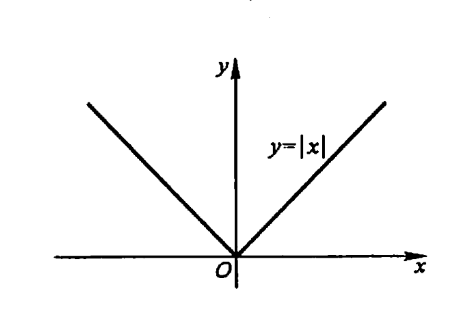
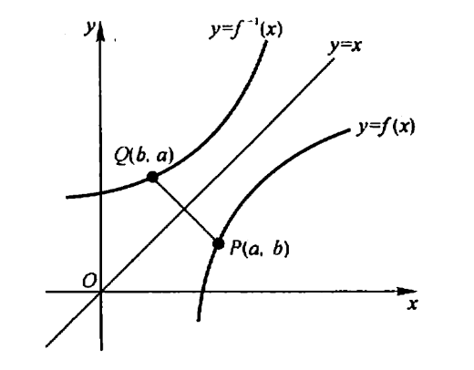
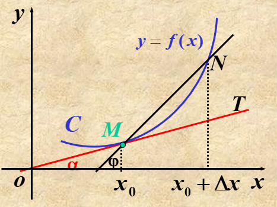
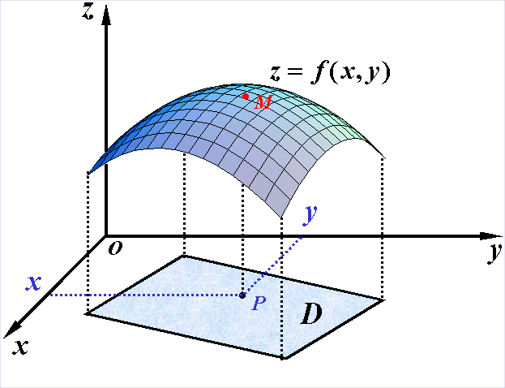
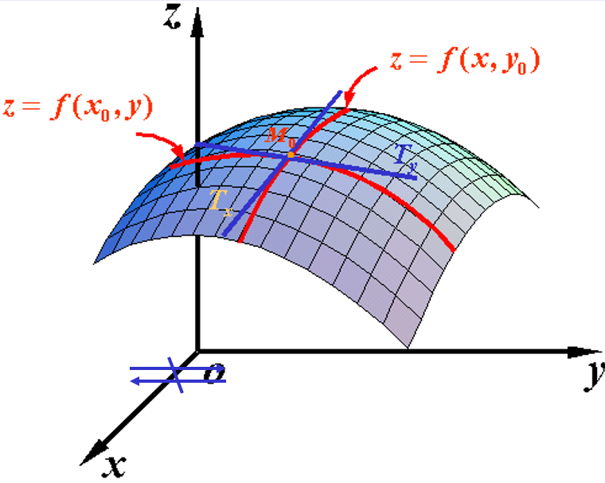
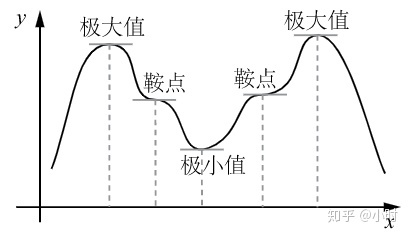
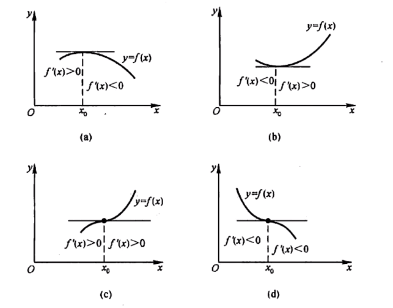
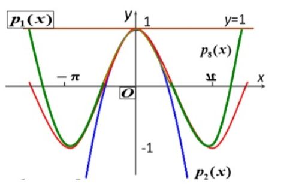
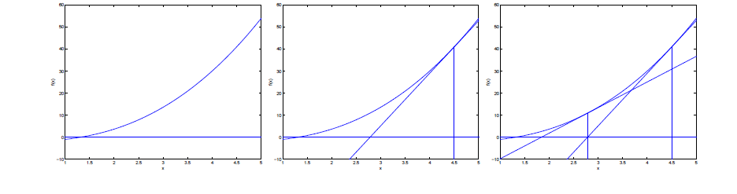

高等数学基础
Contents
高等数学基础#
1.函数#
1.1 函数的定义#
定义:设数集 \(D \subset {\mathbf{R}}, \text { 则称映射 } f: D \rightarrow \mathbf{R} \text { 为定义在 } D \text { 上的函数,通常简记为 }\) $\( y=f(x), x \in D \)\( 函数定义中,对每个 \)x \in D\(,按对应法则 \)f\(,总有唯一确定的值 \)y\( 与之对应， 这个值称为函数 \)f\( 在 \)x\( 处的函数值,记作 \)f(x),\( 即 \)y=f(x) .\( 因变量 \)y\( 与自变量 \)x\( 之间的这种依赖关系,通常称为函数关系. 函数值 \)f(x)\( 的全体所构成的集合称为函数 \)f\( 的值域,记作 \)R_{f}\( 或 \)f(D),\( 即 \)\( R_{f}=f(D)=\{y \mid y=f(x), x \in D\} \)$
说白了，函数就是实数集到实数集的一个映射，如： $\( y=|x|=\left\{\begin{array}{ll} x, & x \geqslant 0 \\ -x, & x<0 \end{array}\right. \)\( 的定义域 \)D=(-\infty,+\infty),\( 值域 \)R_{f}=[0,+\infty),$ 它的图形如下图所示.这函数称为绝对值函数。

1.2 反函数#
设函数 \(f: D \rightarrow f(D)\) 是单射,则它存在逆映射 \(f^{-1}: f(D) \rightarrow D,\) 称此映射 \(f^{-1}\) 为函数 \(f\) 的反函数。按此定义,对每个 \(y \in f(D),\) 有唯一的 \(x \in D,\) 使得 \(f(x)=y,\) 于是有 \(f^{-1}(y)=x\)
这就是说,反函数 \(f^{-1}\) 的对应法则是完全由函数 \(f\) 的对应法则所确定的. 例如,函数 \(y=x^{3}, x \in \mathbf{R}\) 是单射, 所以它的反函数存在,其反函数为
\(x=y^{\frac{1}{3}}, y \in \mathbf{R}\)
由于习惯上自变量用 \(x\) 表示,因变量用 \(y\) 表示,于是 \(y=x^{3}, x \in \mathbf{R}\) 的反函数通常写作 \(y=x^{\frac{1}{3}}, x \in \mathbf{R}\)。一般的, \(y=f(x), x \in D\) 的反函数记成 \(y=f^{-1}(x), x \in f(D)\).

1.3 复合函数#
设函数 \(y=f(u)\) 的定义城为 \(D_{f},\) 函数 \(u=g(x)\) 的定义域为 \(D_{x},\) 且其值域 \(R_{g} \subset D_{t},\) 则由下式确定的函数 $\( y=f[g(x)], \quad x \in D_{x} \)\( 称为由函数 \)u=g(x)\( 与函数 \)y=f(u)\( 构成的复合函数,它的定义域为 \)D_{x}\( ,变量\)u$ 称为中间变量。
例子：物体运动的动能为 \(E=m v^{2} / 2,\) 而自由落体的速度为 \(v=g t,\) 所以自由落体的动能是时间 \(t\) 的复合函数 : $\( E=\frac{1}{2} m g^{2} t^{2} \)$
2.导数#
2.1 引例#
引例1：已知位移求瞬时速度
物体作变速直线运动，已知物体的位置与时间的关系是 \(s=f(t),\) 求物体在 \(t=t_{0}\) 时的瞬时速度为\(v(t_0)\)
当时间由 \(t_{0}\) 变化到 \(t_{0}+\Delta t\) 时，
物体的位移 \(\Delta \boldsymbol{s}=\boldsymbol{f}\left(\boldsymbol{t}_{0}+\Delta t\right)-\boldsymbol{f}\left(t_{0}\right)\)
所以物体在这段时间的平均速度 \(\bar{v}=\frac{\Delta s}{\Delta t}\).
怎样把平均速度与瞬时速度联系起来？
因为在短时间内速度变化不大，所以可用物体在 \(t_{0}\) 附近的平均速度近似 \(t_{0}\) 时刻的瞬时速度.
即 \(\boldsymbol{v}\left(\boldsymbol{t}_{0}\right) \approx \frac{\Delta \boldsymbol{s}}{\Delta \boldsymbol{t}} \quad(\Delta t\)越小误差越小\()\)
为了得到瞬时速度的精确概念，把瞬时速度理解成当时间段无限缩小时平均速度的极限。
即 \(\boldsymbol{v}\left(\boldsymbol{t}_{0}\right)=\lim _{\Delta t \rightarrow 0} \frac{\Delta \boldsymbol{s}}{\Delta t}=\lim _{\Delta t \rightarrow 0} \frac{\boldsymbol{f}\left(\boldsymbol{t}_{0}+\Delta t\right)-\boldsymbol{f}\left(\boldsymbol{t}_{0}\right)}{\Delta \boldsymbol{t}}\)
所以瞬时速度是位移对时间的瞬时变化率。
引例2：曲线的切线
求曲线 \(\boldsymbol{y}=\boldsymbol{f}(\boldsymbol{x})\) 在点 \(\boldsymbol{M}\left(\boldsymbol{x}_{0}, \boldsymbol{f}\left(\boldsymbol{x}_{0}\right)\right)\) 处的切线方程：
在曲线上点 \(M\) 附近取一点 \(N\), 作直线 \(M N\) (割线).
当点N沿着曲线趋向于 \(M\) 时，如果割线 \(M N\)有一个极限位置,就把此极限位置理解为曲线在点M处的切线。

相应的，切线的斜率等于割线斜率的极限。割线 \(M N\) 的斜率为 \(\frac{\Delta y}{\Delta x}=\frac{f\left(x_{0}+\Delta x\right)-f\left(x_{0}\right)}{\Delta x}\)
切线的斜率为
$\(
\begin{aligned} k &=\lim _{\Delta x \rightarrow 0} \frac{\Delta y}{\Delta x} \\ &=\lim _{\Delta x \rightarrow 0} \frac{f\left(x_{0}+\Delta x\right)-f\left(x_{0}\right)}{\Delta x} \end{aligned}
\)$
2.2 导数的定义#
定义：设函数 \(y=f(x)\) 在点 \(x_{0}\) 的某个邻域内有定义,当自变量 \(x\) 在 \(x_{0}\) 处取得增量
\(\Delta x\) ;如果 \(\Delta y\) 与 \(\Delta x\) 之比当 \(\Delta x \rightarrow 0\) 时的 极限存在, 则称函数 \(y=\) \(f(x)\) 在点 \(x_{0}\) 处可导,并称这个极限为函数 \(y=f(x)\) 在点 \(x_{0}\) 处的导数,记为 \(f^{\prime}\left(x_{0}\right),\) 即
$\(
f^{\prime}\left(x_{0}\right)=\lim _{\Delta, x \rightarrow 0} \frac{\Delta y}{\Delta x}=\lim _{\Delta x \rightarrow 0} \frac{f\left(x_{0}+\Delta x\right)-f\left(x_{0}\right)}{\Delta x}
\)\(
也可记作 \)\left.y^{\prime}\right|{x=x{0}}\(,\)\left.\frac{\mathrm{d} y}{\mathrm{~d} x}\right|{x=x{0}}\( 或 \)\left.\frac{\mathrm{d} f(x)}{\mathrm{d} x}\right|{x=x{0}} $。
**简单的说，导数就是因变量的增量与自变量的增量之比的极限。**尝试使用函数导数的定义推导\(y = x^2\)的导数？
2.3 函数的求导法则#
(1) 函数的和差积商的求导法则：
$\(
[u(x) \pm v(x)]^{\prime}=u^{\prime}(x) \pm v^{\prime}(x)\\
[u(x) v(x)]^{\prime}=u^{\prime}(x) v(x)+u(x) v^{\prime}(x) \\
\left[\frac{u(x)}{v(x)}\right]^{\prime}=\frac{u^{\prime}(x) v(x)-u(x) v^{\prime}(x)}{v^{2}(x)}(v(x) \neq 0)
\)$
例子：
求\(y=2 x^{3}-5 x^{2}+3 x-7\)的导数？
解：
$\(
\begin{aligned}
y^{\prime} &=\left(2 x^{3}-5 x^{2}+3 x-7\right)^{\prime} \\
&=\left(2 x^{3}\right)^{\prime}-\left(5 x^{2}\right)^{\prime}+(3 x)^{\prime}-(7)^{\prime} \\
&=2 \cdot 3 x^{2}-5 \cdot 2 x+3-0=6 x^{2}-10 x+3
\end{aligned}
\)$
(2)复合函数的求导法则：
如果 \(u=g(x)\) 在点 \(x\) 可导, 而 \(y=f(u)\) 在点 \(u=g(x)\) 可导, 则：
$\(
\frac{\mathrm{d} y}{\mathrm{~d} x}=f^{\prime}(u) \cdot g^{\prime}(x) \quad \text { 或 } \quad \frac{\mathrm{d} y}{\mathrm{~d} x}=\frac{\mathrm{d} y}{\mathrm{~d} u} \cdot \frac{\mathrm{d} u}{\mathrm{~d} x}
\)$
例子：
\(y=e^{x^{3}},\) 求 \(\frac{d y}{d x}\).
解 \(y=\mathrm{e}^{x^{3}}\) 可看作由 \(y=\mathrm{e}^{\prime \prime}, u=x^{3}\) 复合而成, 因此
$\(
\frac{\mathrm{d} y}{\mathrm{~d} x}=\frac{\mathrm{d} y}{\mathrm{~d} u} \cdot \frac{\mathrm{d} u}{\mathrm{~d} x}=\mathrm{e}^{u} \cdot 3 x^{2}=3 x^{2} \mathrm{e}^{x^{3}}
\)$
(3)常用的初等函数导数：
$\(
(1) (C)^{\prime}=0,\;\;\;
(2) \left(x^{\prime \prime}\right)^{\prime}=\mu x^{\prime \prime-1},\\
(3) (\sin x)^{\prime}=\cos x,\;\;\;
(4) (\cos x)^{\prime}=-\sin x,\\
(5) (\tan x)^{\prime}=\sec ^{2} x,\;\;\;
(6) (\cot x)^{\prime}=-\csc ^{2} x,\\
(7) (\sec x)^{\prime}=\sec x \tan x,\;\;\;
(8) (\csc x)^{\prime}=-\csc x \cot x,\\
(9) \left(a^{x}\right)^{\prime}=a^{x} \ln a,\;\;\;
(10)\left(\mathrm{e}^{x}\right)^{\prime}=\mathrm{e}^{x},\\
(11)\left(\log _{a} x\right)^{\prime}=\frac{1}{x \ln a},\;\;\;
(12) (\ln x)^{\prime}=\frac{1}{x},\\
(13) (\arcsin x)^{\prime}=\frac{1}{\sqrt{1-x^{2}}},\;\;\;
(14) (\arccos x)^{\prime}=-\frac{1}{\sqrt{1-x^{2}}},\\
(15) (\arctan x)^{\prime}=\frac{1}{1+x^{2}},\;\;\;
(16) (\operatorname{arccot} x)^{\prime}=-\frac{1}{1+x^{2}}\\
\)$
2.4 高阶导数#
若函数 \(y=f(x)\) 的导数 \(y^{\prime}=f^{\prime}(x)\) 可导，则称 \(f^{\prime}(x)\) 的导数为 \(f(x)\) 的二阶导数，记作 \(y^{\prime \prime}\) 或 \(\frac{d^{2} y}{d x^{2}},\) 即 $\( y^{\prime \prime}=\left(y^{\prime}\right)^{\prime} \text { 或 } \frac{d^{2} y}{d x^{2}}=\frac{d}{d x}\left(\frac{d y}{d x}\right) \)\( 类似地，二阶导数的导数称为三阶导数，依次类推。二阶和二阶以上的导数统称为高阶导数。 例子： 求函数 \)\ln (1+x)\( 的 2 阶导数： 解： \)y=\ln (1+x), y^{\prime}=\frac{1}{1+x}\(，\)y^{\prime \prime}=-\frac{1}{(1+x)^{2}},$
3.多元函数#
3.1 多元函数的相关概念#
(1)n维空间：
设 \(n\) 为取定的一个正整数,我们用 \(\mathbf{R}^{n}\) 表示 \(n\) 元有序实数组 \(\left(x_{1}, x_{2}, \cdots,\right.\)
\(\left.x_{n}\right)\) 的全体所构成的集合, 即
$\(
\mathbf{R}^{n}=\mathbf{R} \times \mathbf{R} \times \cdots \times \mathbf{R}=\left\{\left(x_{1}, x_{2}, \cdots, x_{n}\right) \mid x_{i} \in \mathbf{R}, i=1,2, \cdots, n\right\}
\)\(
\)\mathbf{R}^{n}\( 中的元素 \)\left(x_{1}, x_{2}, \cdots, x_{n}\right)\( 有时也用单个字母 \)\boldsymbol{x}\( 来表示, 即 \)\boldsymbol{x}=\left(x_{1}, x_{2}, \cdots,\right.\(
\)\left.x_{n}\right) .\( 当所有的 \)x_{i}(i=1,2, \cdots, n)\( 都为零时,称这样的元素为 \)\mathbf{R}^{n}\( 中的零元,记为
0或 O. 在解析几何中,通过直角坐标系, \)\mathbf{R}^{2}\( (或 \)\mathbf{R}^{3}\( )中的元素分别与平面（或空间)中的点或向量建立一一对应。
为了在集合 \)\mathbf{R}^{n}\( 中的元索之间建立联系,在 \)\mathbf{R}^{n}$ 中定义线代运算如下：
设 \(x=\left(x_{1}, x_{2}, \cdots, x_{n}\right), y=\left(y_{1}, y_{2}, \cdots, y_{n}\right)\) 为 \(\mathbf{R}^{n}\) 中任意两个元素 \(, \lambda \in \mathbf{R}\)规定：
$\(
\begin{array}{l}
x+y=\left(x_{1}+y_{1}, x_{2}+y_{2}, \cdots, x_{n}+y_{n}\right), \\
\lambda x=\left(\lambda x_{1}, \lambda x_{2}, \cdots, \lambda x_{n}\right)
\end{array}
\)\(
这样定义了线性运算的集合 \)\mathbf{R}^{n}\( 称为 \)n\( 维空间.
\)\mathbf{R}^{n}\( 中点 \)\boldsymbol{x}=\left(x_{1}, x_{2}, \cdots, x_{n}\right)\( 和点 \)\boldsymbol{y}=\left(y_{1}, y_{2}, \cdots, y_{n}\right)\( 间的距离, 记作\)\rho(x, y),\( 规定
\)\(
\rho(x, y)=\sqrt{\left(x_{1}-y_{1}\right)^{2}+\left(x_{2}-y_{2}\right)^{2}+\cdots+\left(x_{n}-y_{n}\right)^{2}}
\)\(
(2)二元函数：
设 \)D\( 是 \)\mathbf{R}^{2}\( 的一个非空子集,称映射 \)f: D \rightarrow \mathbf{R}\( 为定义在 \)D\( 上的二元函数,通常记为
\)\(
z=f(x, y),(x, y) \in D
\)\(
或
\)\(
z=f(P), P \in D
\)$

3.2 多元函数的偏导数#
定义：
设二元函数 \(=f(x, y)\) 在点 \(\left(x_{0}, y_{0}\right)\) 的某一邻域内有定义，当固定在 \(y_{0}\) 而x在 \(x_{0}\) 处有增量\(\Delta x\)时， 相应的函数有增量 \(\Delta_{x} z=f\left(x_{0}+\Delta x, y_{0}\right)-f\left(x_{0}, y_{0}\right) .\)
如果 \(\lim _{\Delta x \rightarrow 0} \frac{\Delta_{x} z}{\Delta x}\) 存在，就称此极限为函数 \(z=f(x, y)\)
在点( \(\left.x_{0}, y_{0}\right)\) 处对x的偏导数.
记作 \(\frac{\partial z}{\partial x}\left|\left(x_{0}, y_{0}\right), \frac{\partial f}{\partial x}\right|\left(x_{0}, y_{0}\right)^{, z_{x} \mid\left(x_{0}, y_{0}\right)}, f_{x}\left(x_{0}, y_{0}\right) .\)
即 \(\left.\frac{\partial z}{\partial x}\right|_{\left(x_{0}, y_{0}\right)}=\lim _{\Delta x \rightarrow 0} \frac{\Delta_{x} z}{\Delta x}=\lim _{\Delta x \rightarrow 0} \frac{f\left(x_{0}+\Delta x, y_{0}\right)-f\left(x_{0}, y_{0}\right)}{\Delta x}\)
例子：
求 \(z=x^{2}+3 x y+y^{2}\) 在点 (1,2) 处的偏导数.
解：
把 \(y\) 看做常数,得
$\(
\frac{\partial z}{\partial x}=2 x+3 y
\)\(
把 \)x\( 看做常数,得
\)\(
\frac{\partial z}{\partial y}=3 x+2 y
\)\(
将(1,2)代人上面的结果,就得
\)\(
\begin{array}{l}
\left.\frac{\partial z}{\partial x}\right|_{x=1 \atop y=2}=2 \cdot 1+3 \cdot 2=8 \\
\left.\frac{\partial z}{\partial y}\right|_{x=1 \atop y=2}=3 \cdot 1+2 \cdot 2=7
\end{array}
\)$

3.3 梯度向量#
梯度的本意是一个向量（矢量），表示某一函数在该点处的方向导数沿着该方向取得最大值，即函数在该点处沿着该方向（此梯度的方向）变化最快，变化率最大（为该梯度的模）。
定义：设二元函数 \(z=f(x, y)\) 在平面区域D上具有一阶连续偏导数，则对于每一个点P（x, y）都可定出一个向量 \(\left\{\frac{\partial f}{\partial x}, \frac{\partial f}{\partial y}\right\}=f_{x}(x, y) \bar{i}+f_{y}(x, y) \bar{j},\) 该函数就称为函数 \(z=f(x, y)\) 在点P \((\mathrm{x}, \mathrm{y})\) 的梯度，记作gradf \((\mathrm{x}, \mathrm{y})\) 或
\(\nabla f(x, y)\),即有:
$\(
\operatorname{gradf}(\mathrm{x}, \mathrm{y})=\nabla f(x, y)=\left\{\frac{\partial f}{\partial x}, \frac{\partial f}{\partial y}\right\}=f_{x}(x, y) \bar{i}+f_{y}(x, y) \bar{j}
\)\(
其中 \)\nabla=\frac{\partial}{\partial x} \bar{i}+\frac{\partial}{\partial y} \bar{j}\( 称为（二维的）向量微分算子或Nabla算子, \)\nabla f=\frac{\partial f}{\partial x} \bar{i}+\frac{\partial f}{\partial y} \bar{j}\( 。
例子：请你计算\)f(x,y) = x^2 + y^2$的梯度向量。
3.4 雅克比矩阵(Jacobian矩阵)#
假设 \(F: \mathbb{R}_{n} \rightarrow \mathbb{R}_{m}\) 是一个从n维欧氏空间映射到到m维欧氏空间的函数。
这个函数由m个实函数组成:
\(y_{1}\left(x_{1}, \cdots, x_{n}\right), \cdots, y_{m}\left(x_{1}, \cdots, x_{n}\right)\) 。这些函数的偏导数(如果存在)可以组成一个m行n列的矩阵，这个矩阵就是所谓的雅可 比矩阵:
$\(
\left[\begin{array}{ccc}
\frac{\partial y_{1}}{\partial x_{1}} & \cdots & \frac{\partial y_{1}}{\partial x_{n}} \\
\vdots & \ddots & \vdots \\
\frac{\partial y_{m}}{\partial x_{1}} & \cdots & \frac{\partial y_{m}}{\partial x_{n}}
\end{array}\right]
\)\(
**可见，梯度向量是雅克比矩阵的特例！**
例子：求\)F=(f_1(x,y),f_(x,y))^T\(的雅克比矩阵，其中\)f_1(x,y) = 2x^2 + y^2,f_2(x,y) = x^2 + 3y^2$。
3.5 海森矩阵(Hessian 矩阵)#
黑塞矩阵（Hessian Matrix），又译作海森矩阵、海瑟矩阵、海塞矩阵等，是一个多元函数的二阶偏导数构成的方阵，描述了函数的局部曲率。
在数学中，海森矩阵（Hessian matrix 或 Hessian）是一个自变量为向量的实值函数的二阶偏导数组成的方块矩阵，假設有一实数函数
$\(
f\left(x_{1}, x_{2}, \ldots, x_{n}\right)
\)\(
如果 \)f\( 所有的二阶偏导数都存在，那么 \)f\( 的海森矩阵的第 \)i j\( 项，即：
\)\(
H(f)_{i j}(x)=D_{i} D_{j} f(x)
\)\(
其中 \)x=\left(x_{1}, x_{2}, \ldots, x_{n}\right),\( 即
\)\(
H(f)=\left[\begin{array}{cccc}
\frac{\partial^{2} f}{\partial x_{1}^{2}} & \frac{\partial^{2} f}{\partial x_{1} \partial x_{2}} & \cdots & \frac{\partial^{2} f}{\partial x_{1} \partial x_{n}} \\
\frac{\partial^{2} f}{\partial x_{2} \partial x_{1}} & \frac{\partial^{2} f}{\partial x_{2}^{2}} & \cdots & \frac{\partial^{2} f}{\partial x_{2} \partial x_{n}} \\
\vdots & \vdots & \ddots & \vdots \\
\frac{\partial^{2} f}{\partial x_{n} \partial x_{1}} & \frac{\partial^{2} f}{\partial x_{n} \partial x_{2}} & \cdots & \frac{\partial^{2} f}{\partial x_{n}^{2}}
\end{array}\right]
\)\(
实际上，Hessian矩阵是梯度向量g(x)对自变量x的Jacobian矩阵。
例子：求\)f(x,y)=2x^2+y^2$的海森矩阵。
4.函数的极值问题#
4.1 函数的极值与最值的概念#
极值：设函数 \(f(x)\) 在点 \(x_{0}\) 的某邻域 \(U\left(x_{0}\right)\) 内有定义，如果对于去心邻域U \(\left(x_{0}\right)\) 内的任一 \(x\), 有 A $\( f(x)<f\left(x_{0}\right) \text { 或 } f(x)>f\left(x_{0}\right) \)\( 那么就称 \)f\left(x_{0}\right)$ 是函数的一个极大值或极小值。函数的极大值和极小值统称为函数的极值, 使函数取得极值的点被称作极值点。

最值是函数在其定义域内取得最大值（或最小值）的点的函数值。极值是局部性的概念，而最值是全局性的概念。
4.2 最优性条件#
一元函数框架下：#
1.判定极值的一阶充分条件：
设函数 \(f(x)\) 在 \(x_{0}\) 处连续，且在 \(x_{0}\) 的某去心邻域 \(U\left(x_{0}, \delta\right)\) 内可导
(1) 若 \(x \in\left(x_{0}-\delta, x_{0}\right)\) 时, \(f^{\prime}(x)>0,\) 而 \(x \in\left(x_{0}, x_{0}+\delta\right)\) 时， \(f^{\prime}(x)<0,\) 则 \(f(x)\) 在 \(x_{0}\) 处取得极大值;
(2) 若 \(x \in\left(x_{0}-\delta, x_{0}\right)\) 时， \(f^{\prime}(x)<0\),而 \(x \in\left(x_{0}, x_{0}+\delta\right)\) 时， \(f^{\prime}(x)>0\),则 \(f(x)\) 在 \(x_{0}\) 处取得极小值
(3) 若 \(x \in \dot{U}\left(x_{0}, \delta\right)\) 时, \(f^{\prime}(x)\) 的符号保持不变，则 \(f(x)\) 在 \(x_{0}\) 处没有极值

2.判定极值的二阶充分条件：
设函数 \(f(x)\) 在 \(x_{0}\) 处具有二阶导数且 \(f^{\prime}\left(x_{0}\right)=0, \quad f^{\prime \prime}\left(x_{0}\right) \neq 0\) 那么：
(1) 当 \(f^{\prime \prime}\left(x_{0}\right)<0\) 时，函数 \(f(x)\) 在 \(x_{0}\) 处取得极大值;
(2) 当 \(f^{\prime \prime}\left(x_{0}\right)>0\) 时，函数 \(f(x)\) 在 \(x_{0}\) 处取得极小值.
多元函数框架下#
定理：（二元函数取得极值的充分条件）如果函数 \(z=f(x, y)\) 在点 \(\left(x_{0}, y_{0}\right)\) 的某邻域内具有连续的二阶偏导数, \(\left(x_{0}, y_{0}\right)\) 是它的驻点，令：
$\(
\begin{array}{c}
A=f_{x x}\left(x_{0}, y_{0}\right), B=f_{x y}\left(x_{0}, y_{0}\right), C=f_{y y}\left(x_{0}, y_{0}\right) \\
\Delta=B^{2}-A C
\end{array}
\)\(
则:
(1)当\)\Delta<0\( 时， \)f(x, y)\( 在 \)\left(x_{0}, y_{0}\right)\( 取得极值. 其中 \)A>0\( 时取极小值, \)A<0\( 时取极大值.
(2)当 \)\Delta>0\( 时, \)f\left(x_{0}, y_{0}\right)\( 不是极值.
(3)当 \)\Delta=0$ 时, 不能确定，需进一步判断.
更加严谨的表述：
设n多元实函数 \(f\left(x_{1}, x_{2}, \cdots, x_{n}\right)\) 在点 \(M_{0}\left(a_{1}, a_{2}, \ldots, a_{n}\right)\) 的邻域内有二阶连续偏导，若有:
$\(
\left.\frac{\partial f}{\partial x_{j}}\right|_{\left(a_{1}, a_{2}, \ldots, a_{n}\right)}=0, j=1,2, \ldots, n
\)\(
并且
\)\(
A=\left[\begin{array}{cccc}
\frac{\partial^{2} f}{\partial x_{1}^{2}} & \frac{\partial^{2} f}{\partial x_{1} \partial x_{2}} & \cdots & \frac{\partial^{2} f}{\partial x_{1} \partial x_{n}} \\
\frac{\partial^{2} f}{\partial x_{2} \partial x_{1}} & \frac{\partial^{2} f}{\partial x_{2}^{2}} & \cdots & \frac{\partial^{2} f}{\partial x_{2} \partial x_{n}} \\
\vdots & \vdots & \ddots & \vdots \\
\frac{\partial^{2} f}{\partial x_{n} \partial x_{1}} & \frac{\partial^{2} f}{\partial x_{n} \partial x_{2}} & \cdots & \frac{\partial^{2} f}{\partial x_{n}^{2}}
\end{array}\right]
\)\(
则有如下结果:
(1) 当A正定矩阵时, \)f\left(x_{1}, x_{2}, \cdots, x_{n}\right)\( 在 \)M_{0}\left(a_{1}, a_{2}, \ldots, a_{n}\right)\( 处是极小值;
(2) 当A负定矩阵时, \)f\left(x_{1}, x_{2}, \cdots, x_{n}\right)\( 在 \)M_{0}\left(a_{1}, a_{2}, \ldots, a_{n}\right)\( 处是极大值;
(3) 当A不定矩阵时, \)M_{0}\left(a_{1}, a_{2}, \ldots, a_{n}\right)\( 不是极值点。
(4) 当A为半正定矩阵或半负定矩阵时, \)M_{0}\left(a_{1}, a_{2}, \ldots, a_{n}\right)$ 是“可疑”极值点，尚需要利用其他方法来判定。
例子：求三元函数 \(f(x, y, z)=x^{2}+y^{2}+z^{2}+2 x+4 y-6 z\) 的极值。
解: 因为 \(\frac{\partial f}{\partial x}=2 x+2, \frac{\partial f}{\partial y}=2 y+4, \frac{\partial f}{\partial z}=2 z-6,\) 故该三元函数的驻点是 (-1,-2,3) 。
又因为 \(\frac{\partial^{2} f}{\partial x^{2}}=2, \frac{\partial^{2} f}{\partial y^{2}}=2, \frac{\partial^{2} f}{\partial z^{2}}=2, \frac{\partial^{2} f}{\partial x \partial y}=0, \frac{\partial^{2} f}{\partial x \partial z}=0, \frac{\partial^{2} f}{\partial y \partial z}=0\)
故有: \(A=\left(\begin{array}{ccc}2 & 0 & 0 \\ 0 & 2 & 0 \\ 0 & 0 & 2\end{array}\right)\)
因为A是正定矩阵，故 (-1,-2,3) 是极小值点，且极小值 \(f(-1,-2,3)=-14\) 。
4.3 求带等式约束的优化问题(拉格朗日乘子法)#
引例：
求表面积为 \(a^{2}\) 市体积最大的长方体的体积。
方法(1)：化为无条件约束的优化问题，再使用4.2节的方法
设长方体的三棱的长为 \(x, y, z,\) 则体积
$\(
V=x y z
\)\(
又因假定表面积为 \)a^{2},\( 所以自变量 \)x, \quad y, \quad z\( 还必须满足附加条件
\)\(
2(x y+y z+x z)=a^{2}
\)\(
像这种对自变量有附加条件的极值问题称为条件极值。而没有附加条件的问题就叫无条件极值。 有条件极值可以化为无条件极值，例如上述问题，可将条件2 \)2(x y+y z+x z)=a^{2},\( 用 \)z\( 表成 \)x, \quad y\( 的函数
\)\(
z=\frac{a^{2}-2 x y}{2(x+y)}
\)\(
再把它代人 \)V=x y z\( 中，于是问题就化为求
\)\(
V=\frac{x y}{2}\left(\frac{a^{2}-2 x y}{x+y}\right)
\)$
方法(2)：拉格朗日乘子法
问题：求函数 \(z=f(x, y)\) 在条件 \(\varphi(x, y)=0\) 下的极值。
引入拉格朗日函数 \(L(x, y)=f(x, y)+\lambda \varphi(x, y)\)
则极值点满足： \(\left\{\begin{array}{l}L_{x}\left(x_{0}, y_{0}\right)=0 \\ L_{y}\left(x_{0}, y_{0}\right)=0 \\ \varphi\left(x_{0}, y_{0}\right)=0\end{array}\right.\)
回到之前求体积的例子，已知 $\( 2(x y+{y} z+x z)=a^{2} \)\( 拉格朗日函数可以写成 \)\( L(x, y, z)=x y z+\lambda\left(2 x y+2 y z+2 x z-a^{2}\right) \)\( 求其对 \)x, y, z\( 的偏导数，并使之为零，得到 \)\( \begin{array}{l} y z+2 \lambda(y+z)=0 \\ x z+2 \lambda(x+z)=0 \\ x y+2 \lambda(y+x)=0 \end{array} \)\( 上面三个式子在与条件等式联立，可得 \)\( \frac{x}{y}=\frac{x+z}{y+z}, \frac{y}{z}=\frac{x+y}{x+z} \)\( 解得：\)x=y=z=\sqrt[3]{V_{0}}$
5.泰勒公式#
泰勒公式就是用一个多项式函数去逼近一个给定的函数(即尽量使多项式函数图像拟合给定的函数图像)。如果一个非常复杂函数，想求其某点的值，直接求无法实现，这时候可以使用泰勒公式去近似的求该值，这是泰勒公式的应用之一。泰勒公式在机器学习中主要应用于梯度迭代。
定义：设 \(n\) 是一个正整数。如果定义在一个包含a的区间上的函数 \(f\) 在 \(a\) 点处 \(n+1\) 次可导，那么对于这个区间上的任意 \(x\) 都有:
$\(
\begin{array}{c}
f(x)=\frac{f(a)}{0 !}+\frac{f^{\prime}(a)}{1 !}(x-a)+\frac{f^{\prime \prime}(a)}{2 !}(x-a)^{2}+\cdots+\frac{f^{(n)}(a)}{n !}(x-a)^{n}+R_{n}(x) \\
=\sum_{n=0}^{N} \frac{f^{(n)}(a)}{n !}(x-a)^{n}+R_{n}(x)
\end{array}
\)\(
其中的多项式称为函数在a处的泰勒展开式, \)R_{n}(x)$ 是泰勒公式的余项。

6.基于梯度的优化方法–梯度下降法#
作业：使用梯度下降法求函数\(y=cos(x)\)在区间\(x \in [0,2\pi]\)的极小值点。
import numpy as np
import matplotlib.pyplot as plt
def f(x):
return np.power(x, 2)
def d_f_1(x):
'''
求导数的方式1
'''
return 2.0 * x
def d_f_2(f, x, delta=1e-4):
'''
求导数的第二种方法
'''
return (f(x+delta) - f(x-delta)) / (2 * delta)
# plot the function
xs = np.arange(-10, 11)
plt.plot(xs, f(xs))
learning_rate = 0.1
max_loop = 30
x_init = 10.0
x = x_init
lr = 0.1
x_list = []
for i in range(max_loop):
#d_f_x = d_f_1(x)
d_f_x = d_f_2(f, x)
x = x - learning_rate * d_f_x
x_list.append(x)
x_list = np.array(x_list)
plt.scatter(x_list,f(x_list),c="r")
plt.show()
print('initial x =', x_init)
print('arg min f(x) of x =', x)
print('f(x) =', f(x))
initial x = 10.0
arg min f(x) of x = 0.012379400392859128
f(x) = 0.00015324955408672073
7.基于梯度的优化方法–牛顿迭代法#
作业：使用牛顿迭代法求函数\(y=cos(x)\)在区间\(x \in [0,2\pi]\)的极小值点。
牛顿法：
首先牛顿法是求解函数值为0时的自变量取值的方法。
利用牛顿法求解目标函数的最小值其实是转化成求使目标函数的一阶导为0的参数值。这一转换的理论依据是，函数的极值点处的一阶导数为0.
其迭代过程是在当前位置x0求该函数的切线，该切线和x轴的交点x1，作为新的x0,重复这个过程，直到交点和函数的零点重合。此时的参数值就是使得目标函数取得极值的参数值。
其迭代过程如下：

迭代的公式如下:
$\(
\theta:=\theta-\alpha \frac{\ell^{\prime}(\theta)}{\ell^{\prime \prime}(\theta)}
\)\(
当\)\theta\(是向量时, 牛顿法可以使用下面式子表示:
\)\(
\theta:=\theta-\alpha H^{-1} \nabla_{\theta} \ell(\theta)
\)\(
其中\)H\(叫做海森矩阵，其实就是目标函数对参数\)\theta$的二阶导数。
牛顿法和梯度下降法的比较
1.牛顿法：是通过求解目标函数的一阶导数为0时的参数，进而求出目标函数最小值时的参数。
收敛速度很快。
海森矩阵的逆在迭代过程中不断减小，可以起到逐步减小步长的效果。
缺点：海森矩阵的逆计算复杂，代价比较大，因此有了拟牛顿法。
2.梯度下降法：是通过梯度方向和步长，直接求解目标函数的最小值时的参数。
越接近最优值时，步长应该不断减小，否则会在最优值附近来回震荡。
import numpy as np
import pandas as pd
import matplotlib.pyplot as plt
import time
%matplotlib inline
from mpl_toolkits.mplot3d import Axes3D
class Rosenbrock():
def __init__(self):
self.x1 = np.arange(-100, 100, 0.0001)
self.x2 = np.arange(-100, 100, 0.0001)
#self.x1, self.x2 = np.meshgrid(self.x1, self.x2)
self.a = 1
self.b = 1
self.newton_times = 1000
self.answers = []
self.min_answer_z = []
# 准备数据
def data(self):
z = np.square(self.a - self.x1) + self.b * np.square(self.x2 - np.square(self.x1))
#print(z.shape)
return z
# 随机牛顿
def snt(self,x1,x2,z,alpha):
rand_init = np.random.randint(0,z.shape[0])
x1_init,x2_init,z_init = x1[rand_init],x2[rand_init],z[rand_init]
x_0 =np.array([x1_init,x2_init]).reshape((-1,1))
#print(x_0)
for i in range(self.newton_times):
x_i = x_0 - np.matmul(np.linalg.inv(np.array([[12*x2_init**2-4*x2_init+2,-4*x1_init],[-4*x1_init,2]])),np.array([4*x1_init**3-4*x1_init*x2_init+2*x1_init-2,-2*x1_init**2+2*x2_init]).reshape((-1,1)))
x_0 = x_i
x1_init = x_0[0,0]
x2_init = x_0[1,0]
answer = x_0
return answer
# 绘图
def plot_data(self,min_x1,min_x2,min_z):
x1 = np.arange(-100, 100, 0.1)
x2 = np.arange(-100, 100, 0.1)
x1, x2 = np.meshgrid(x1, x2)
a = 1
b = 1
z = np.square(a - x1) + b * np.square(x2 - np.square(x1))
fig4 = plt.figure()
ax4 = plt.axes(projection='3d')
ax4.plot_surface(x1, x2, z, alpha=0.3, cmap='winter') # 生成表面， alpha 用于控制透明度
ax4.contour(x1, x2, z, zdir='z', offset=-3, cmap="rainbow") # 生成z方向投影，投到x-y平面
ax4.contour(x1, x2, z, zdir='x', offset=-6, cmap="rainbow") # 生成x方向投影，投到y-z平面
ax4.contour(x1, x2, z, zdir='y', offset=6, cmap="rainbow") # 生成y方向投影，投到x-z平面
ax4.contourf(x1, x2, z, zdir='y', offset=6, cmap="rainbow") # 生成y方向投影填充，投到x-z平面，contourf()函数
ax4.scatter(min_x1,min_x2,min_z,c='r')
# 设定显示范围
ax4.set_xlabel('X')
ax4.set_ylabel('Y')
ax4.set_zlabel('Z')
plt.show()
# 开始
def start(self):
times = int(input("请输入需要随机优化的次数："))
alpha = float(input("请输入随机优化的步长"))
z = self.data()
start_time = time.time()
for i in range(times):
answer = self.snt(self.x1,self.x2,z,alpha)
self.answers.append(answer)
min_answer = np.array(self.answers)
for i in range(times):
self.min_answer_z.append((1-min_answer[i,0,0])**2+(min_answer[i,1,0]-min_answer[i,0,0]**2)**2)
optimal_z = np.min(np.array(self.min_answer_z))
optimal_z_index = np.argmin(np.array(self.min_answer_z))
optimal_x1,optimal_x2 = min_answer[optimal_z_index,0,0],min_answer[optimal_z_index,1,0]
end_time = time.time()
running_time = end_time-start_time
print("优化的时间:%.2f秒!" % running_time)
self.plot_data(optimal_x1,optimal_x2,optimal_z)
if __name__ == '__main__':
snt = Rosenbrock()
snt.start()
---------------------------------------------------------------------------
StdinNotImplementedError Traceback (most recent call last)
/tmp/ipykernel_18795/1257372207.py in <module>
83 if __name__ == '__main__':
84 snt = Rosenbrock()
---> 85 snt.start()
/tmp/ipykernel_18795/1257372207.py in start(self)
64 # 开始
65 def start(self):
---> 66 times = int(input("请输入需要随机优化的次数："))
67 alpha = float(input("请输入随机优化的步长"))
68 z = self.data()
/opt/conda/lib/python3.9/site-packages/ipykernel/kernelbase.py in raw_input(self, prompt)
1001 """
1002 if not self._allow_stdin:
-> 1003 raise StdinNotImplementedError(
1004 "raw_input was called, but this frontend does not support input requests."
1005 )
StdinNotImplementedError: raw_input was called, but this frontend does not support input requests.